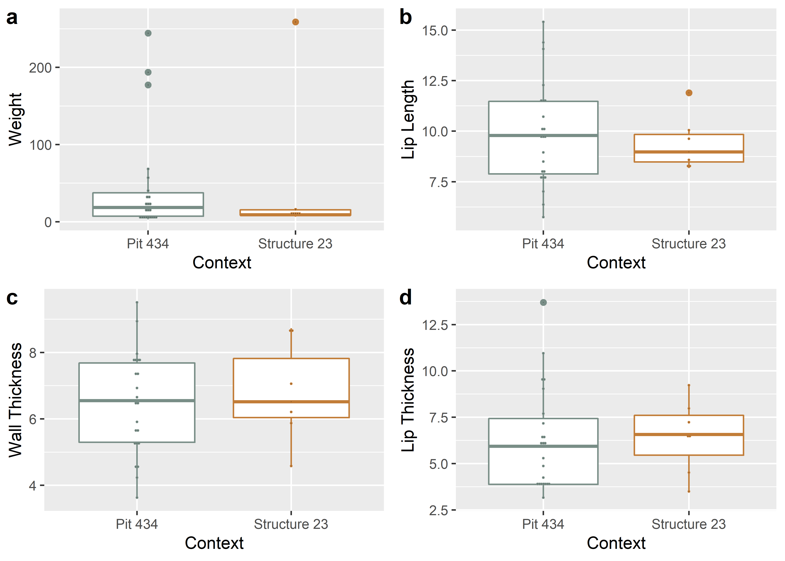
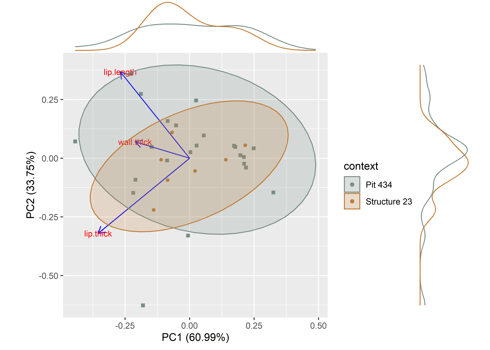

Chapter 1 Linear morphometrics
# install required analysis packages
#devtools::install_github("tidyverse/tidyverse")
#devtools::install_github("mlcollyer/RRPP")
#devtools::install_github("kassambara/ggpubr")
#devtools::install_github("sinhrks/ggfortify")
#devtools::install_github("daattali/ggExtra")
# load libraries
library(here)## here() starts at E:/github/carson.rimlibrary(tidyverse)## -- Attaching packages ------------------------------------------------------------------------- tidyverse 1.3.1 --## v ggplot2 3.3.5 v purrr 0.3.4
## v tibble 3.1.3 v dplyr 1.0.7
## v tidyr 1.1.3 v stringr 1.4.0
## v readr 2.0.1 v forcats 0.5.1## -- Conflicts ---------------------------------------------------------------------------- tidyverse_conflicts() --
## x dplyr::filter() masks stats::filter()
## x dplyr::lag() masks stats::lag()library(RRPP)
library(ggpubr)
library(ggfortify)
library(cluster)
library(wesanderson)
library(ggExtra)1.1 Read data and define variables
# read data
data <- read.csv("qdata.csv", header = TRUE, as.is=TRUE)
# define variables
context <- data$context
surf.treat <- data$surf.treat
weight <- data$weight
lip.len <- data$lip.length
wall.th <- data$wall.thick
lip.th <- data$lip.thick1.2 Boxplots for variable by context
Weight is included in the boxplots; however, since sherd weight includes more (sometimes much more) mass than the rim itself, that variable was omitted from the subsequent analysis. The degree to which wall thickness is applicable to this inquiry is debatable; however, it was included for the proof of concept.
# boxplot of weight ~ context
contextweight <- ggplot(data, aes(x = context, y = weight, color = context)) +
geom_boxplot() +
geom_dotplot(binaxis = 'y',stackdir = 'center',dotsize = 0.3) +
scale_colour_manual(values = wes_palette("Moonrise2")) +
theme(legend.position = "none") +
labs(x = 'Context', y = 'Weight')
# boxplot of lip length ~ context
contextliplen <- ggplot(data, aes(x = context, y = lip.len, color = context)) +
geom_boxplot() +
geom_dotplot(binaxis = 'y',stackdir = 'center',dotsize = 0.3) +
scale_colour_manual(values = wes_palette("Moonrise2")) +
theme(legend.position = "none") +
labs(x = 'Context', y = 'Lip Length')
# boxplot of wall thickness ~ context
contextwallth <- ggplot(data, aes(x = context, y = wall.th, color = context)) +
geom_boxplot() +
geom_dotplot(binaxis = 'y',stackdir = 'center',dotsize = 0.3) +
scale_colour_manual(values = wes_palette("Moonrise2")) +
theme(legend.position = "none") +
labs(x = 'Context', y = 'Wall Thickness')
# boxplot of lip thickness ~ context
contextlipth <- ggplot(data, aes(x = context, y = lip.th, color = context)) +
geom_boxplot() +
geom_dotplot(binaxis = 'y',stackdir = 'center',dotsize = 0.3) +
scale_colour_manual(values = wes_palette("Moonrise2")) +
theme(legend.position = "none") +
labs(x = 'Context', y = 'Lip Thickness')
# render figure
contextfigure <- ggarrange(contextweight, contextliplen, contextwallth, contextlipth,
labels = c("a","b","c","d"),
ncol = 2, nrow = 2)## Bin width defaults to 1/30 of the range of the data. Pick better value with `binwidth`.
## Bin width defaults to 1/30 of the range of the data. Pick better value with `binwidth`.
## Bin width defaults to 1/30 of the range of the data. Pick better value with `binwidth`.
## Bin width defaults to 1/30 of the range of the data. Pick better value with `binwidth`.# plot figure
contextfigure

Figure 1.1: Boxplots for weight, lip length, wall thickness, and lip thickness for ceramic rims by context.
1.3 Principal Components Analysis
#attributes for plot
df<-data[c(7:9)]
pch.gps.gp <- c(15,16)[as.factor(context)]
col.gps.gp <- wes_palette("Moonrise2")[as.factor(context)]
#pca
pca <- autoplot(prcomp(df),
data = data,
asp = 1,
shape = pch.gps.gp,
colour = "context",
variance_percentage = TRUE,
loadings = TRUE,
loadings.colour = 'blue',
loadings.label = TRUE,
loadings.label.size = 3,
frame = TRUE,
frame.type = 't') +
scale_fill_manual(values = wes_palette("Moonrise2")) +
scale_colour_manual(values = wes_palette("Moonrise2"))
ggMarginal(pca, groupColour = TRUE)

Figure 1.2: Principal components analysis by context.
1.4 Analyses of Variance (ANOVA) for variable ~ context
1.4.1 Lip length ~ context
# anova = lip length ~ context
contextll <- lm.rrpp(lip.len ~ context,
SS.type = "I",
data = data, iter = 9999,
print.progress = FALSE)
anova(contextll)##
## Analysis of Variance, using Residual Randomization
## Permutation procedure: Randomization of null model residuals
## Number of permutations: 10000
## Estimation method: Ordinary Least Squares
## Sums of Squares and Cross-products: Type I
## Effect sizes (Z) based on F distributions
##
## Df SS MS Rsq F Z Pr(>F)
## context 1 1.211 1.2107 0.00776 0.219 -0.34935 0.6351
## Residuals 28 154.777 5.5277 0.99224
## Total 29 155.987
##
## Call: lm.rrpp(f1 = lip.len ~ context, iter = 9999, SS.type = "I", data = data, print.progress = FALSE)1.4.2 Wall thickness ~ context
# anova = wall thickness ~ context
contextwth <- lm.rrpp(wall.th ~ context,
SS.type = "I",
data = data,
iter = 9999,
print.progress = FALSE)
anova(contextwth)##
## Analysis of Variance, using Residual Randomization
## Permutation procedure: Randomization of null model residuals
## Number of permutations: 10000
## Estimation method: Ordinary Least Squares
## Sums of Squares and Cross-products: Type I
## Effect sizes (Z) based on F distributions
##
## Df SS MS Rsq F Z Pr(>F)
## context 1 0.575 0.57457 0.00865 0.2443 -0.30361 0.6198
## Residuals 28 65.863 2.35223 0.99135
## Total 29 66.437
##
## Call: lm.rrpp(f1 = wall.th ~ context, iter = 9999, SS.type = "I", data = data, print.progress = FALSE)1.4.3 Lip thickness ~ context
# anova = lip thickness ~ context
contextlth <- lm.rrpp(lip.th ~ context,
SS.type = "I",
data = data,
iter = 9999,
print.progress = FALSE)
anova(contextlth)##
## Analysis of Variance, using Residual Randomization
## Permutation procedure: Randomization of null model residuals
## Number of permutations: 10000
## Estimation method: Ordinary Least Squares
## Sums of Squares and Cross-products: Type I
## Effect sizes (Z) based on F distributions
##
## Df SS MS Rsq F Z Pr(>F)
## context 1 0.39 0.3903 0.00204 0.0573 -0.93303 0.8098
## Residuals 28 190.64 6.8086 0.99796
## Total 29 191.03
##
## Call: lm.rrpp(f1 = lip.th ~ context, iter = 9999, SS.type = "I", data = data, print.progress = FALSE)